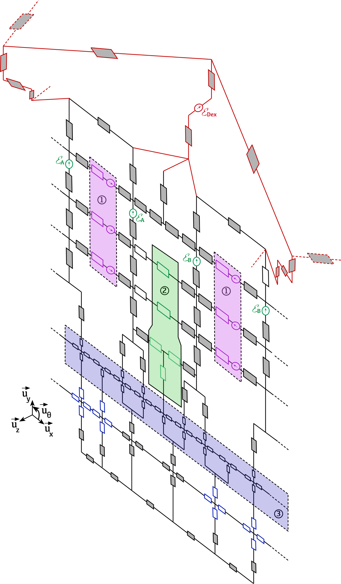

Demonstrator
1 kW and 5 kW CTAF
Fractional and sectorised synchronous machines controlled by several inverters.
Experimental resources are central to the TeSE approach: design, modelling, measurement, validation and control.

Fractional and sectorised synchronous machines controlled by several inverters.

High-speed characterisation, performance and loss measurements on driving cycles.

Flux-switching machines, multiphase machines and fault-tolerant topologies.
The logos below are lightweight institutional markers and can be replaced by validated official files.